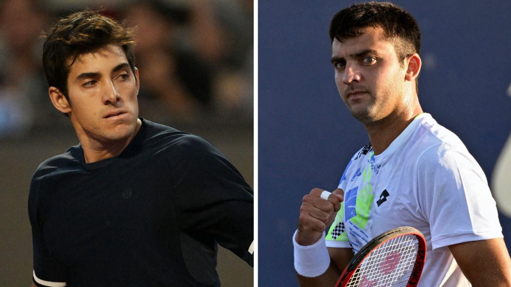

Diario "El Faro"

Austria vivirá una final totalmente chilena, luego del gran campeonato que han hecho Tomás Barrios Vera y Cristian Garin, ambos finalistas del Challenger de Mauthausen.
Si bien hace algunas horas se informó del partidazo que envió al partido decisivo por el trofeo de Tomás Barrios Vera, pero hace instantes, Garin dio el golpe, remontó un partidazo y concretó una hazaña para ser disputar junto al chillanejo el trofeo en el corazón de Europa.
Cristian se enfrentó al argentino Román Andrés Burruchaga, quien no le hizo las cosas fáciles y lo complicó en más de una ocasión, dejando tambaleando al nacional en suelo austríaco.
El primer set lo perdió 3-6, el segundo set comenzó de la misma manera, con el chileno cayendo por 3 a 0 en el arranque, pero un cambio de mentalidad fue vital para que el nacional se tomara las cosas enserio y fuera con todo en busca de la victoria. esto motivó a ‘Gago’, quien revertió el marcador en contra y se adjudicó la segunda manga por 6-4, para finalmente acabar ganado el tercer set con un abultado y aplastador 6-0
Esta victoria le da el pase directo a la final en donde enfrentará a Tomás Barrios Vera en un duelo totalmente chileno por el trofeo en el Challenger de Mauthausen.

El duelo está pactado para disputarse este domingo en horario por definirse. Cabe destacar que el historial entre ambos está a favor de Tomás Barrios, quien tiene un importante 2 a 1 contra Cristian Garin.